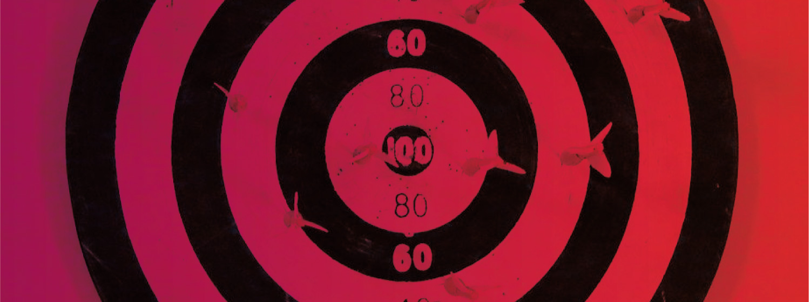

Programa colaborativo
Benvind@s al proceso de elaboración colaborativa del programa d'En Comú Podem.

Te invitamos a aportar al proceso de participación digitial para la elaboración del programa electoral para las elecciones generales del 20 de diciembre de En Comú Podem.
Queremos seguir construyendo la revolución democrática poniéndola en práctica y te ofrecemos la oportunidad de construir un programa en común. Es en los procesos abiertos, colaborativos y mediados por la tecnología, donde se puede incidir de forma cualitativa y cuantitativa una participación amplia por parte de la ciudadanía donde encontramos dinámicas capaces de generar inteligencia colectiva.
Es por ello que queremos saber de tu conocimiento y experiencia para definir un programa en común. Ya hemos consultado a entidades y personas en diferentes ámbitos, dando como partida un documento que queremos enriquecer xon las aportaciones de las personas que habitan Catalunya.
Sigue el menú de la izquierda para navegar por el manual.